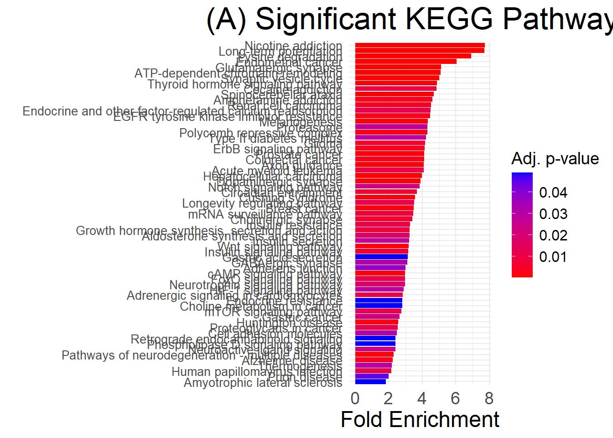

07/25 2025
2025-07-25
Last updated: 2025-07-29
Checks: 6 1
Knit directory: deep_motifs/
This reproducible R Markdown analysis was created with workflowr (version 1.7.1). The Checks tab describes the reproducibility checks that were applied when the results were created. The Past versions tab lists the development history.
The R Markdown file has unstaged changes. To know which version of
the R Markdown file created these results, you’ll want to first commit
it to the Git repo. If you’re still working on the analysis, you can
ignore this warning. When you’re finished, you can run
wflow_publish to commit the R Markdown file and build the
HTML.
Great job! The global environment was empty. Objects defined in the global environment can affect the analysis in your R Markdown file in unknown ways. For reproduciblity it’s best to always run the code in an empty environment.
The command set.seed(20230928) was run prior to running
the code in the R Markdown file. Setting a seed ensures that any results
that rely on randomness, e.g. subsampling or permutations, are
reproducible.
Great job! Recording the operating system, R version, and package versions is critical for reproducibility.
Nice! There were no cached chunks for this analysis, so you can be confident that you successfully produced the results during this run.
Great job! Using relative paths to the files within your workflowr project makes it easier to run your code on other machines.
Great! You are using Git for version control. Tracking code development and connecting the code version to the results is critical for reproducibility.
The results in this page were generated with repository version 79b65c2. See the Past versions tab to see a history of the changes made to the R Markdown and HTML files.
Note that you need to be careful to ensure that all relevant files for
the analysis have been committed to Git prior to generating the results
(you can use wflow_publish or
wflow_git_commit). workflowr only checks the R Markdown
file, but you know if there are other scripts or data files that it
depends on. Below is the status of the Git repository when the results
were generated:
Ignored files:
Ignored: .Rhistory
Unstaged changes:
Modified: analysis/index.Rmd
Modified: analysis/part03_func_enrichment_clusterprofiler.Rmd
Note that any generated files, e.g. HTML, png, CSS, etc., are not included in this status report because it is ok for generated content to have uncommitted changes.
These are the previous versions of the repository in which changes were
made to the R Markdown
(analysis/part03_func_enrichment_clusterprofiler.Rmd) and
HTML (docs/part03_func_enrichment_clusterprofiler.html)
files. If you’ve configured a remote Git repository (see
?wflow_git_remote), click on the hyperlinks in the table
below to view the files as they were in that past version.
| File | Version | Author | Date | Message |
|---|---|---|---|---|
| Rmd | 79b65c2 | han | 2025-07-25 | 7/25/2025 |
| html | 79b65c2 | han | 2025-07-25 | 7/25/2025 |
| Rmd | 0b5c9c7 | han | 2025-07-25 | 7/25/2025 |
| html | 0b5c9c7 | han | 2025-07-25 | 7/25/2025 |
| Rmd | 08915de | han | 2025-07-25 | 7/25/2025 |
| html | 08915de | han | 2025-07-25 | 7/25/2025 |
rm(list=ls())
set.seed(123)
library(tidyverse)
library(ggplot2)
library(DT)
library(VennDiagram)
library(rprojroot)
root <- rprojroot::find_rstudio_root_file()#result_round1=as_tibble(read.csv(file.path(root, "../DiWangResults/ASD_prediction_results/ASD_RISK_PREDICTION_round1.csv"))) # old results
result_round1=as_tibble(read.csv(file.path(root, "../DiWangResults/results updated_20250303/ASD_RISK_PREDICTION round 1.csv")))
result_round1=result_round1[result_round1['gene'] != 0,] # remove rows with gene=0
SFARI_genes=as_tibble(read.csv(file.path(root, "../../../Dataset/SFARI_base/SFARI-Gene_genes_08-19-2024release_09-16-2024export.csv")))
positive_genes=SFARI_genes %>% filter (gene.score=="1") %>% dplyr::select(gene.symbol) %>% pull()
positive_genes=intersect(positive_genes, result_round1$gene)
score_cutoff=0.5
top_genes=result_round1 %>% filter(RISK_PROBABILITY_FUSION>score_cutoff) %>% dplyr::select(gene_gencodeV33) %>% pullclusterprofiler
#if (!requireNamespace("BiocManager", quietly = TRUE))
# install.packages("BiocManager")
#BiocManager::install(c("clusterProfiler", "org.Hs.eg.db", "enrichplot"))
# Load the libraries
library(clusterProfiler)
library(org.Hs.eg.db) # For human gene annotations
library(enrichplot) # For visualizationego <- enrichGO(gene = top_genes,
OrgDb = org.Hs.eg.db,
keyType = "SYMBOL",
ont = "All", # BP: Biological Process, CC: Cellular Component, MF: Molecular Function
pAdjustMethod = "BH",
pvalueCutoff = 0.05,
qvalueCutoff = 0.01)
# View the result
#head(ego)
# Dotplot for GO enrichment
dotplot(ego, showCategory=nrow(ego), title="")+
theme(axis.text.y = element_text(size = 6)) # Adjust the size as needed
| Version | Author | Date |
|---|---|---|
| 08915de | han | 2025-07-25 |
# Extract significant terms while preserving the enrichResult object
#significant_ego <- ego
#significant_ego@result <- significant_ego@result[significant_ego@result$p.adjust < 0.05, ]
# Create the dot plot with significant terms only
#dotplot(significant_ego, showCategory = nrow(significant_ego), title = "GO Enrichment - Biological Process")Gene-Concept Network
# Convert gene symbols to Entrez IDs
gene_df <- bitr(top_genes, fromType = "SYMBOL", toType = "ENTREZID", OrgDb = org.Hs.eg.db)
# Extract Entrez IDs
entrez_ids <- gene_df$ENTREZID
#print(entrez_ids)
ekegg <- enrichKEGG(gene = entrez_ids,
organism = "hsa", # Human
pAdjustMethod = "BH",
pvalueCutoff = 0.05)
# View the result
#head(ekegg)
# Barplot for KEGG enrichment
#barplot(ekegg, showCategory= nrow(ekegg), title="KEGG Pathway Enrichment")+
# theme(axis.text.y = element_text(size = 5))
#Sort ekegg results by Count in descending order
ekegg_sorted <- ekegg
ekegg_sorted@result <- ekegg@result[order(ekegg@result$Count, decreasing = TRUE), ]
# Plot with sorted categories
barplot(ekegg_sorted,
showCategory = nrow(ekegg_sorted), # show all
title = "KEGG Pathway Enrichment") +
theme(axis.text.y = element_text(size = 5),
plot.title = element_text(hjust = 0.5)) # Center title
| Version | Author | Date |
|---|---|---|
| 0b5c9c7 | han | 2025-07-25 |
# Extract and filter
df <- as.data.frame(ekegg@result)
df_filtered <- df[df$p.adjust < 0.05, ]
# Sort by Fold Enrichment
df_filtered <- df_filtered[order(df_filtered$FoldEnrichment, decreasing = TRUE), ]
# Plot
ggplot(df_filtered, aes(x = reorder(Description, FoldEnrichment),
y = FoldEnrichment,
fill = p.adjust)) +
geom_col() +
coord_flip() +
scale_fill_gradient(low = "red", high = "blue", name = "Adj. p-value") +
labs(title = "(A) Significant KEGG Pathways",
x = "",
y = "Fold Enrichment") +
theme_minimal() +
theme(
plot.title = element_text(hjust = 0.5, size = 25),
axis.text.y = element_text(size = 10),
axis.text.x = element_text(size = 14),
legend.title = element_text(size = 14), # increase legend title
legend.text = element_text(size = 12), # increase legend label text,
axis.title.x = element_text(size = 18) # y-axis title (this line was added)
)
| Version | Author | Date |
|---|---|---|
| 0b5c9c7 | han | 2025-07-25 |
length(unique(df_filtered$Description))[1] 63- 63 significant enriched deep-motifs pathways
SFARI genes
# Convert gene symbols to Entrez IDs
gene_df <- bitr(positive_genes, fromType = "SYMBOL", toType = "ENTREZID", OrgDb = org.Hs.eg.db)
# Extract Entrez IDs
entrez_ids <- gene_df$ENTREZID
#print(entrez_ids)
sfari_ekegg <- enrichKEGG(gene = entrez_ids,
organism = "hsa", # Human
pAdjustMethod = "BH",
pvalueCutoff = 0.05)
# Extract and filter
sfari_df <- as.data.frame(sfari_ekegg@result)
sfari_df_filtered <- sfari_df[sfari_df$p.adjust < 0.05, ]
# Sort by Fold Enrichment
sfari_df_filtered <- sfari_df_filtered[order(sfari_df_filtered$FoldEnrichment, decreasing = TRUE), ]
# Plot
sfari_kegg_pathway=ggplot(sfari_df_filtered, aes(x = reorder(Description, FoldEnrichment),
y = FoldEnrichment,
fill = p.adjust)) +
geom_col() +
coord_flip() +
scale_fill_gradient(low = "red", high = "blue", name = "Adj. p-value") +
labs(title = "SFARI",
x = "",
y = "Fold Enrichment") +
theme_minimal() +
theme(
plot.title = element_text(hjust = 0.5, size = 25),
axis.text.y = element_text(size = 10),
axis.text.x = element_text(size = 14),
legend.title = element_text(size = 14), # increase legend title
legend.text = element_text(size = 12), # increase legend label text,
axis.title.x = element_text(size = 18) # y-axis title (this line was added)
)
sfari_kegg_pathway
#kegg_pathway
length(unique(sfari_df_filtered$Description))[1] 59- 59 significant sfari enriched pathways
compare SFARI vs MOTIFs
library(dplyr)
library(ggplot2)
# Add Source column
df_filtered$Source <- "Deep-MOTIFs"
sfari_df_filtered$Source <- "SFARI"
# Combine datasets
combined_df <- bind_rows(df_filtered, sfari_df_filtered)
# Replace NA counts with 0
combined_df$Count[is.na(combined_df$Count)] <- 0
# Step 1: Get Description order from SFARI (largest to smallest)
sfari_order <- combined_df %>%
filter(Source == "SFARI") %>%
arrange(desc(Count)) %>%
pull(Description) %>%
unique()
# Step 2: Add in Deep-MOTIFs-only descriptions to the bottom
all_desc <- unique(combined_df$Description)
deep_only_desc <- setdiff(all_desc, sfari_order)
final_levels <- c(sfari_order, deep_only_desc)
# Step 3: Apply new ordering to the Description factor
combined_df$Description <- factor(combined_df$Description, levels = final_levels)
# Step 4: Plot
ggplot(combined_df, aes(x = Description, y = Count, fill = Source)) +
geom_col(position = position_dodge(width = 0.7)) +
coord_flip() +
labs(title = "(A) KEGG Pathway Comparison",
x = "",
y = "Gene Count") +
theme_minimal() +
theme(
plot.title = element_text(hjust = 0.5, size = 25),
axis.text.y = element_text(size = 10),
axis.text.x = element_text(size = 14),
legend.title = element_text(size = 14),
legend.text = element_text(size = 12),
axis.title.x = element_text(size = 18)
) +
guides(fill = guide_legend(title = NULL)) +
scale_fill_manual(values = c("SFARI" = "steelblue", "Deep-MOTIFs" = "tomato"))
- 46 significant enriched pathways both in sfari and deep-motifs
ggplot(combined_df, aes(x = Description,
y = -log(p.adjust),
fill = Source)) +
geom_col(position = position_dodge(width = 0.7)) +
coord_flip() +
labs(title = "(A) KEGG Pathway Comparison",
x = "",
y = "-log(p value)") +
theme_minimal() +
theme(
plot.title = element_text(hjust = 0.5, size = 25),
axis.text.y = element_text(size = 10),
axis.text.x = element_text(size = 14),
legend.title = element_text(size = 14),
legend.text = element_text(size = 12),
axis.title.x = element_text(size = 18)
) +
scale_fill_manual(values = c("SFARI" = "steelblue", "Deep-MOTIFs" = "tomato"))
#combined_df <- combined_df %>%
# group_by(Source) %>%
# mutate(Description = fct_reorder(Description, FoldEnrichment))
kegg_comparison_plot=ggplot(combined_df, aes(x = Description, y = FoldEnrichment, fill = p.adjust)) +
geom_col() +
facet_wrap(~Source) +
scale_fill_gradient(low = "red", high = "blue", name = "Adj. p-value") +
coord_flip() +
labs(title = "(A)",
x = "",
y = "Fold enrichment") +
theme_minimal() +
theme(
plot.title = element_text(hjust = 0.5, size = 50),
strip.text = element_text(size = 30, face = "bold"), # facet subtitle size
axis.text.y = element_text(size = 14),
axis.text.x = element_text(size = 35),
legend.title = element_text(size = 24),
legend.text = element_text(size = 22),
axis.title.x = element_text(size = 30),
axis.title.y = element_blank() # remove y-axis label
)
kegg_comparison_plot
wide_df <- combined_df %>%
dplyr::select(category, subcategory, Description, FoldEnrichment,p.adjust, Count, Source) %>%
pivot_wider(
names_from = Source,
values_from = c(FoldEnrichment, p.adjust, Count),
names_sep = "."
)%>%
mutate(across(where(is.numeric), ~ round(.x, 4)))
wide_df%>%
datatable(extensions = 'Buttons',
options = list(dom = 'Blfrtip',
buttons = c('copy', 'csv', 'excel', 'pdf', 'print'),
lengthMenu = list(c(10,25,50,-1),
c(10,25,50,"All"))))# Convert gene symbols to Entrez IDs
gene_df <- bitr(top_genes, fromType = "SYMBOL", toType = "ENTREZID", OrgDb = org.Hs.eg.db)
# Extract Entrez IDs
entrez_ids <- gene_df$ENTREZID
#print(entrez_ids)
ekegg <- enrichKEGG(gene = entrez_ids,
organism = "hsa", # Human
pAdjustMethod = "BH",
pvalueCutoff = 0.05)
# Network plot for KEGG pathways
cnetplot(ekegg, circular = TRUE, colorEdge = TRUE, cex_label_gene=0.5, cex_label_category=5)
length(unique(ekegg@gene))[1] 446# Convert Entrez IDs to Gene Symbols
gene_symbols <- bitr(entrez_ids, fromType = "ENTREZID", toType = "SYMBOL", OrgDb = org.Hs.eg.db)
# Merge the converted gene symbols back into the enrichment result
ekegg@result$geneID <- sapply(strsplit(ekegg@result$geneID, "/"), function(ids) {
symbols <- gene_symbols$SYMBOL[match(ids, gene_symbols$ENTREZID)]
paste(symbols, collapse = "/")
})
length(unique(ekegg@gene))[1] 446# Plot the cnetplot with gene symbols
cnetplot(ekegg, circular = TRUE, colorEdge = TRUE, cex_label_gene=0.4, cex_label_category=1)
# Your gene list (symbols or IDs from ekegg)
all_genes <- unique(unlist(strsplit(ekegg@result$geneID, split = "/")))
# Define new genes (example)
new_genes <- setdiff(all_genes, positive_genes) # replace with your actual new genes
# Example: your gene groups vector (names are gene symbols or IDs)
gene_group <- ifelse(all_genes %in% new_genes, "new", "old")
names(gene_group) <- all_genes
# Create a vector of colors by gene group
group_colors <- c(new = "red", old = "grey50", category = "orange")
# Replace long description with line break version
ekegg@result$Description <- gsub(
"ATP-dependent chromatin remodeling",
"ATP-dependent\nchromatin remodeling",
ekegg@result$Description
)
# Generate cnetplot and assign it to a variable
p <- cnetplot(ekegg,
circular = TRUE,
colorEdge = TRUE,
cex_label_gene = 1.3,
cex_label_category = 1)
# Assign 'node_group' based on 'name'
p$data <- p$data %>%
mutate(node_group = case_when(
name %in% new_genes ~ "new",
name %in% positive_genes ~ "old",
TRUE ~ "category"
)) %>%
# Map group to color column used by plot
mutate(color = group_colors[node_group])
# Now force ggplot to use your colors for the nodes
net_plot=p +
# Override color scale to identity so colors in 'color' column are used directly
scale_color_identity()+
ggtitle("(B)")+ # Replace with your desired title
theme(plot.title = element_text(hjust = 0.5, size=50),
legend.position = "right",
legend.title = element_blank(), # Remove legend title
legend.text = element_text(size = 20) # Bigger legend labels
)
net_plot
top 5 pathways, 63 unique genes
# Extract top 5 pathways by p values
ekegg_top5 <- ekegg
ekegg_top5@result <- ekegg@result[1:5, ]
# Convert to tibble to use dplyr functions safely
ekegg_df <- as_tibble(ekegg_top5@result)
# Extract gene–pathway relationships
gene_pathway_df <- ekegg_df %>%
dplyr::select(Description, geneID) %>%
tidyr::separate_rows(geneID, sep = "/") %>%
dplyr::rename(pathway = Description, gene = geneID) %>%
dplyr::distinct()
# Filter genes shown in the cnetplot
Genes_in_pathways <- unique(p$data$name[p$data$node_group %in% c("new", "old")])
gene_pathway_df <- gene_pathway_df %>%
filter(gene %in% Genes_in_pathways)
# Add annotations
in_positive <- ifelse(gene_pathway_df$gene %in% positive_genes, "Yes", "NO")
in_deep_motifs <- ifelse(gene_pathway_df$gene %in% top_genes, "Yes", "NO")
names(in_positive) <- gene_pathway_df$gene
names(in_deep_motifs) <- gene_pathway_df$gene
annotation_df <- gene_pathway_df %>%
mutate(
IS_SFARI_gene = in_positive[gene],
IS_MOTIFs_gene = in_deep_motifs[gene]
)
annotation_df%>%
datatable(extensions = 'Buttons',
options = list(dom = 'Blfrtip',
buttons = c('copy', 'csv', 'excel', 'pdf', 'print'),
lengthMenu = list(c(10,25,50,-1),
c(10,25,50,"All"))))length(unique(annotation_df$gene))[1] 63library(gridExtra)
all <- grid.arrange(kegg_comparison_plot, net_plot, nrow=1)
ggsave(all,filename = paste0("C:\\Users\\hans\\OneDrive - Marquette University\\AI_for_Autism\\Fig\\KEGG-pathway-Deep-MOTIFs.pdf"),width = 29,height = 12,dpi = 600)all <- grid.arrange(ranking_change, gene_set_enrichment,kegg_comparison_plot, net_plot, nrow=2)
ggsave(all,filename = paste0("C:\\Users\\hans\\OneDrive - Marquette University\\AI_for_Autism\\Fig\\real_data_validation.pdf"),width = 20,height = 16,dpi = 900)# show how many genes are displayed in the graph
top_n <- 5 # change this number to your desired showCategory
top_terms <- ekegg@result %>%
arrange(p.adjust) %>%
slice_head(n = top_n)
genes_shown <- unique(unlist(strsplit(top_terms$geneID, "/")))
length(genes_shown) # Number of genes that will appear[1] 63novel_genes=intersect(genes_shown, new_genes)
length(novel_genes)[1] 32setdiff(novel_genes, SFARI_genes$gene.symbol) [1] "ADCY1" "PPP1CC" "PUM1" "ATXN2L" "ADRM1" "PSMA3"
[7] "PUM2" "PAK5" "ARHGEF12" "SLIT1" "PLXNA1" "PLXNB2"
[13] "GSK3B" "PLXNA2" "SLC17A7" "LZTS3" "ARID1A" "GATAD2B"
[19] "BPTF" "BAZ1B" "SMARCE1" "INO80D" 63 genes were displayed in top 5 enriched pathways
32 are novel gene by Deep-MOTIFs, 22 of which are not in any SFARI categories.
top 20 enriched terms
#library(dplyr)
#ekegg@result %>%
# arrange(p.adjust) %>%
# select(ID, Description, p.adjust) %>%
# head(10) # Top 10 enriched terms
#list top 10 enriched terms
ekegg_result_sorted <- ekegg@result[order(ekegg@result$p.adjust), ]
head(ekegg_result_sorted[, c("ID", "Description", "p.adjust")], 20) ID Description
hsa04720 hsa04720 Long-term potentiation
hsa05017 hsa05017 Spinocerebellar ataxia
hsa04360 hsa04360 Axon guidance
hsa04724 hsa04724 Glutamatergic synapse
hsa03082 hsa03082 ATP-dependent\nchromatin remodeling
hsa04919 hsa04919 Thyroid hormone signaling pathway
hsa00310 hsa00310 Lysine degradation
hsa05225 hsa05225 Hepatocellular carcinoma
hsa05033 hsa05033 Nicotine addiction
hsa05213 hsa05213 Endometrial cancer
hsa04721 hsa04721 Synaptic vesicle cycle
hsa04728 hsa04728 Dopaminergic synapse
hsa05022 hsa05022 Pathways of neurodegeneration - multiple diseases
hsa04934 hsa04934 Cushing syndrome
hsa04916 hsa04916 Melanogenesis
hsa04024 hsa04024 cAMP signaling pathway
hsa05215 hsa05215 Prostate cancer
hsa05224 hsa05224 Breast cancer
hsa05016 hsa05016 Huntington disease
hsa04310 hsa04310 Wnt signaling pathway
p.adjust
hsa04720 2.170928e-06
hsa05017 1.042721e-05
hsa04360 1.042721e-05
hsa04724 1.042721e-05
hsa03082 1.042721e-05
hsa04919 1.371055e-05
hsa00310 1.371055e-05
hsa05225 3.727612e-05
hsa05033 1.787085e-04
hsa05213 3.528842e-04
hsa04721 5.370403e-04
hsa04728 5.370403e-04
hsa05022 5.730050e-04
hsa04934 6.007590e-04
hsa04916 7.103547e-04
hsa04024 8.274028e-04
hsa05215 9.813542e-04
hsa05224 1.186882e-03
hsa05016 1.413170e-03
hsa04310 1.485627e-03
sessionInfo()R version 4.4.0 (2024-04-24 ucrt)
Platform: x86_64-w64-mingw32/x64
Running under: Windows 10 x64 (build 19045)
Matrix products: default
locale:
[1] LC_COLLATE=English_United States.utf8
[2] LC_CTYPE=English_United States.utf8
[3] LC_MONETARY=English_United States.utf8
[4] LC_NUMERIC=C
[5] LC_TIME=English_United States.utf8
time zone: America/Chicago
tzcode source: internal
attached base packages:
[1] stats4 grid stats graphics grDevices utils datasets
[8] methods base
other attached packages:
[1] enrichplot_1.24.4 org.Hs.eg.db_3.19.1 AnnotationDbi_1.66.0
[4] IRanges_2.38.0 S4Vectors_0.42.0 Biobase_2.64.0
[7] BiocGenerics_0.50.0 clusterProfiler_4.12.6 rprojroot_2.0.4
[10] VennDiagram_1.7.3 futile.logger_1.4.3 DT_0.33
[13] lubridate_1.9.3 forcats_1.0.0 stringr_1.5.1
[16] dplyr_1.1.4 purrr_1.0.2 readr_2.1.5
[19] tidyr_1.3.1 tibble_3.2.1 ggplot2_3.5.1
[22] tidyverse_2.0.0
loaded via a namespace (and not attached):
[1] RColorBrewer_1.1-3 rstudioapi_0.16.0 jsonlite_1.8.8
[4] magrittr_2.0.3 farver_2.1.2 rmarkdown_2.26
[7] fs_1.6.4 zlibbioc_1.50.0 vctrs_0.6.5
[10] memoise_2.0.1 ggtree_3.12.0 htmltools_0.5.8.1
[13] lambda.r_1.2.4 gridGraphics_0.5-1 sass_0.4.9
[16] bslib_0.7.0 htmlwidgets_1.6.4 plyr_1.8.9
[19] httr2_1.0.1 futile.options_1.0.1 cachem_1.0.8
[22] whisker_0.4.1 igraph_2.0.3 lifecycle_1.0.4
[25] pkgconfig_2.0.3 gson_0.1.0 Matrix_1.7-0
[28] R6_2.5.1 fastmap_1.1.1 GenomeInfoDbData_1.2.12
[31] aplot_0.2.5 digest_0.6.35 colorspace_2.1-0
[34] patchwork_1.3.0 crosstalk_1.2.1 RSQLite_2.3.6
[37] labeling_0.4.3 fansi_1.0.6 timechange_0.3.0
[40] httr_1.4.7 polyclip_1.10-7 compiler_4.4.0
[43] bit64_4.0.5 withr_3.0.0 BiocParallel_1.38.0
[46] viridis_0.6.5 DBI_1.2.3 highr_0.10
[49] ggforce_0.4.2 R.utils_2.12.3 MASS_7.3-60.2
[52] rappdirs_0.3.3 tools_4.4.0 scatterpie_0.2.4
[55] ape_5.8-1 httpuv_1.6.15 R.oo_1.27.0
[58] glue_1.7.0 nlme_3.1-164 GOSemSim_2.30.2
[61] promises_1.3.0 shadowtext_0.1.4 reshape2_1.4.4
[64] fgsea_1.30.0 generics_0.1.3 gtable_0.3.5
[67] tzdb_0.4.0 R.methodsS3_1.8.2 data.table_1.15.4
[70] hms_1.1.3 tidygraph_1.3.1 utf8_1.2.4
[73] XVector_0.44.0 ggrepel_0.9.5 pillar_1.9.0
[76] yulab.utils_0.2.0 later_1.3.2 splines_4.4.0
[79] tweenr_2.0.3 treeio_1.28.0 lattice_0.22-6
[82] bit_4.0.5 tidyselect_1.2.1 GO.db_3.19.1
[85] Biostrings_2.72.0 knitr_1.46 git2r_0.33.0
[88] gridExtra_2.3 xfun_0.43 graphlayouts_1.2.2
[91] stringi_1.8.4 UCSC.utils_1.0.0 lazyeval_0.2.2
[94] ggfun_0.1.8 workflowr_1.7.1 yaml_2.3.8
[97] evaluate_0.23 codetools_0.2-20 ggraph_2.2.1
[100] qvalue_2.36.0 ggplotify_0.1.2 cli_3.6.2
[103] munsell_0.5.1 jquerylib_0.1.4 Rcpp_1.0.12
[106] GenomeInfoDb_1.40.0 png_0.1-8 parallel_4.4.0
[109] blob_1.2.4 DOSE_3.30.5 tidytree_0.4.6
[112] viridisLite_0.4.2 scales_1.3.0 crayon_1.5.2
[115] rlang_1.1.3 cowplot_1.1.3 fastmatch_1.1-6
[118] KEGGREST_1.44.0 formatR_1.14